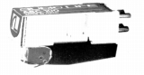
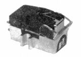
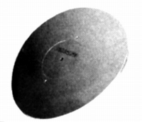

AUDIO LIFE(オーディオライフ）
1970年代後半に登場したカートリッジのブランド。オーディオテクニカのVM型カートリッジは各社にOEM供給されていたが、単品販売品の場合、VM型とは明示しないのが常（例 Lo-DのMT-150では「左右独立V型マグネット」と表現）だが、このブランドは「VM型」と明示していた。シバタ針などを採用した低出力型のVM型高級モデルを販売していた。しかし販売期間は短かったようだ。
�T.カートリッジ


�U.その他 
真鍮製のターンテーブルシート（スタビライザー）があったようだ。